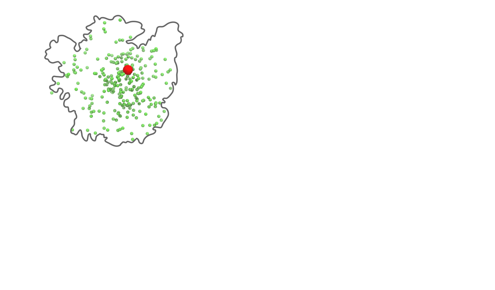
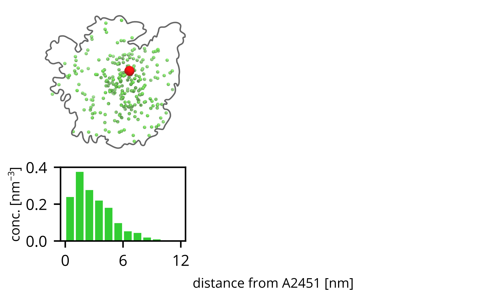
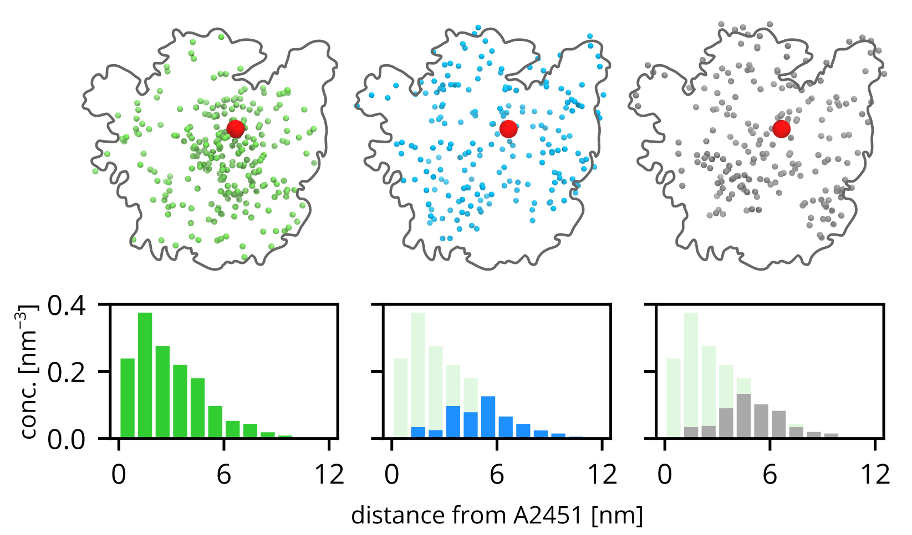

a talk given on conference A road to LUCA at Charles University, Prague, Czechia
Created using Reveal.js.
Use the right arrow to start browsing the slides.
Computer simulations of prebiotic predecessors of the ribosome
Michal Kolář
Left: interface between protoribosomal RNA and short fragments of r-protein uL22
foto: Mikael Kanerva link
2500+1500 nodes
0.55 exaFLOP
€ 144 million
foto: Fade Creative link



Kolář, Hlouchová,
Evolution of protein-RNA interactions PMID 40628174
Q & A
What is the structure and dynamics of the protoribosomes?
Similar to the exant ribosome.
How do peptides interact with the prRNA?
They crawl on the prRNA surface.
What happens with MG ions on the prRNA upon heating?
Nothing.
How does the protoribosome thermally unfold?
Sequentially, starting by disrupting inter-stem contacts.
Computer simulations of prebiotic predecessors of the ribosome
Michal Kolář
kolarh@vscht.cz